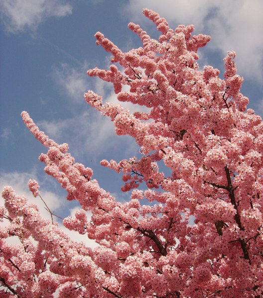

Когда цветет сакура?
Из-за географического расположения Японии, которая протянулась от умеренных до субтропических широт, период цветения сакуры несколько размазан и единственно верной даты назвать нельзя.
Например, на Окинаве (самом южном острове страны) сакура может зацвести уже в январе, когда как на северном Хоккайдо стоит ожидать цветения только к лету.
Начало и продолжительность цветения сакуры меняется из года в год. Официально считается, что в Токио сакура зацветает с 27 марта по 7 апреля, в Саппоро - с 12 марта до 20 апреля, в Киото - с 4 по 16 апреля, в Осаке - с 5 по 13 апреля, однако цифры эти приблизительные.
Если перед началом сезона цветения стоит теплая погода, то сакура может зацвести на одну-две недели раньше, а если ему предшествуют холода, то первые бутоны могут появиться намного позже запланированной даты.
Кстати, именно 27 марта является началом праздника цветения сакуры, который обладает общенациональным статусом.
Сезон цветения сакуры относительно короткий. После раскрытия первых бутонов деревья стоят в полном цвету от нескольких дней или даже часов до недели, после чего цветы начинают быстро опадать. Сильный ветер или дождь могут еще больше сократить период цветения.
Именно поэтому с приближением весны в Японии большой популярностью пользуются прогнозы цветения сакуры, которые ежедневно сообщают по радио и телевидению, и других СМИ, в каких городах и провинциях сакура уже в полном цвету, а где она зацветет со дня на день. Многие японцы перемещаются по стране вслед за волной цветущей сакуры, чтобы иметь возможность любоваться цветением сакуры в течение всей весны.
А для тех, кто хочет наслаждаться сакурой круглый год, большое количество музеев Японии организуют выставки, на которых используется эффект ароматерапии. При осмотре картин с изображением цветущей сакуры посетители могут чувствовать сладковатый аромат цветов сакуры. Считается, что эта процедура оказывает тонизирующее воздействие, снимает усталость и предупреждает стресс 
Чертыковцева Татьяна 2013 ©